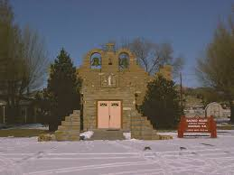

Quemado is one of the bigger towns or as the people there like to call it "village". Its population is consisting of 214 people, luckily, because of the small population the community is even closer and more involved. In Quemado there is the only school in catron County except for Reserve. The other small towns, Pie Town, Fence Lake, and Datil all send their kids to school here. In the town there also is the only store for miles and also a mail center.
